Candidate List 20260826Last night — ZTF: 1,549 passed basic cuts (59 young) · LSST: 0 passed basic cuts (0 young)Previous Day Next Day
Section 1: New Sources (age<1d) Section 2: Old (1-5d) sources observed last nightplaceholder
Section 1: New Afterglow/FBOT Cands Last Night (0)
Section 2: Older Sources Observed Last Night (7)
0. [ZTF] ZTF26abqhtiz (FBOT?) [Back to Top] [Share] [Trigger Swift] [Fritz Alert] [Fritz Source] [Lasair]RA, Dec: 25.61237, 5.93216 1h42m26.97s, 5d55m55.77sGalactic (l, b): 145.27027, -54.71199 WARNING: -4.37 deg from ecliptic plane ext(g-r) = 0.064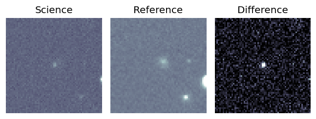
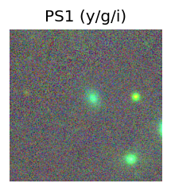
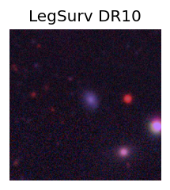
TESS: Sectors [42 43 70]
SDSS (<15 kpc):Found SDSS phot-z: z=0.10; peak abs mag = -19.17
PS1: 0 sources in 3 arcsec
LegacySurvey: 1 sources in 3 arcsec Closest: d = 3.30 arcsec, 310.3 deg (east of north) photoz=0.12 (68% bounds 0.09, 0.14), type=SER peak abs mag (ext. corrected) = -19.58 (68% bounds -18.9, -20.05)
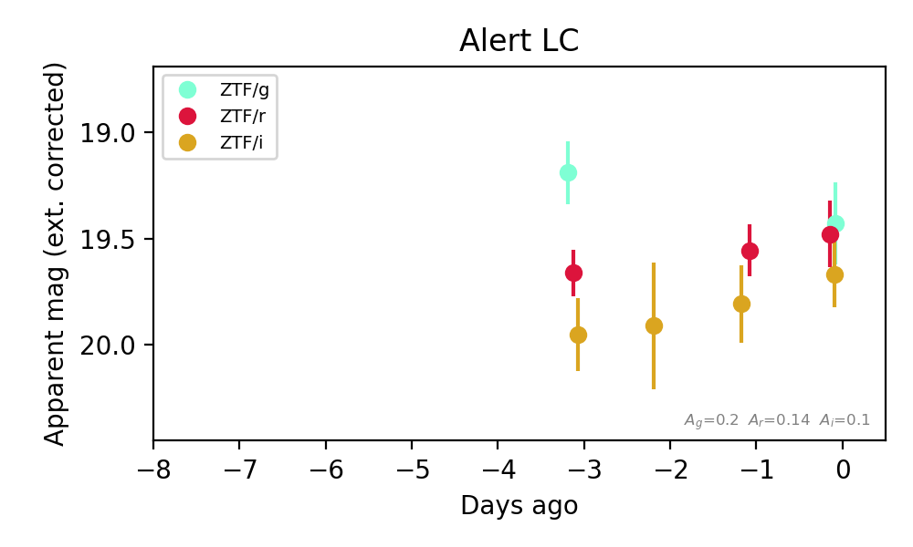
Extinction-corrected gr color:
From alerts: -0.05 +/- 0.25 mag
Extinction-corrected gi color:
From alerts: -0.24 +/- 0.25 mag
Extinction-corrected ri color:
From alerts: -0.19 +/- 0.22 mag
Consistent with synchrotron, g-r>0!
Rise Rate:
g: 0.26 mag/day
r: 0.17 mag/day
i: 0.05 mag/day
Fade Rate:
1. [ZTF] ZTF26abqfafz (Afterglow?) [Back to Top] [Share] [Trigger Swift] [Fritz Alert] [Fritz Source] [Lasair]RA, Dec: 270.61735, 10.11689 18h 2m28.16s, 10d 7m0.79sGalactic (l, b): 36.56867, 15.41916 ext(g-r) = 0.154


TESS: Sectors [ 80 118]
PS1: 1 source in 3 arcsec Closest: d = 7.19 arcsec photoz=0.76+/-0.27 peak abs mag = -25.45
LegacySurvey: 0 sources in 3 arcsec

Extinction-corrected gr color:
From alerts: -0.7 +/- 0.23 mag
Extinction-corrected gi color:
From alerts: -0.82 +/- 0.25 mag
Extinction-corrected ri color:
From alerts: -0.12 +/- 0.32 mag
Consistent with synchrotron, g-r>0!
Rise Rate:
g: 1.63 mag/day
r: 1.75 mag/day
i: 0.3 mag/day
Fade Rate:
g: 0.19 mag/day
r: 0.29 mag/day
2. [ZTF] ZTF26abqqrpt (Afterglow?) [Back to Top] [Share] [Trigger Swift] [Fritz Alert] [Fritz Source] [Lasair]RA, Dec: 300.1858, 50.07426 20h 0m44.59s, 50d 4m27.34sGalactic (l, b): 84.4113, 10.34504 ext(g-r) = 0.125


TESS: Sectors [ 14 15 16 41 54 55 56 74 75 76 81 83 120 121]
PS1: 1 source in 3 arcsec Closest: d = 2.98 arcsec photoz=0.26+/-0.08 peak abs mag = -21.24
LegacySurvey: 0 sources in 3 arcsec

Extinction-corrected gr color:
From alerts: 0.08 +/- 0.27 mag
Consistent with synchrotron, g-r>0!
Rise Rate:
g: 0.2 mag/day
r: 13.48 mag/day
Fade Rate:
3. [ZTF] ZTF26abqetic (Afterglow?) [Back to Top] [Share] [Trigger Swift] [Fritz Alert] [Fritz Source] [Lasair]RA, Dec: 179.80908, 34.22654 11h59m14.18s, 34d13m35.54sGalactic (l, b): 177.40433, 76.73762 ext(g-r) = 0.018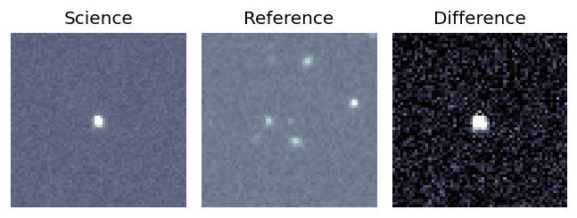
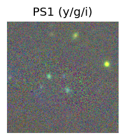
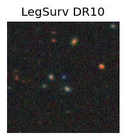
TESS: Sectors [22 49]
SDSS (<15 kpc):Found SDSS phot-z: z=0.36; peak abs mag = -26.35
PS1: 0 sources in 3 arcsec
LegacySurvey: 1 sources in 3 arcsec Closest: d = 0.39 arcsec, 264.5 deg (east of north) photoz=0.01 (68% bounds 0.01, 0.57), type=PSF peak abs mag (ext. corrected) = -18.87 (68% bounds -17.8, -27.57)
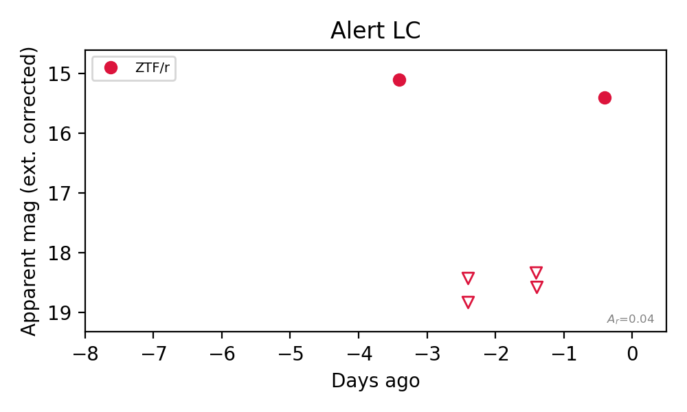
Rise Rate:
r: 3.18 mag/day
Fade Rate:
r: 3.72 mag/day
4. [ZTF] ZTF26abqqppl (Afterglow?FBOT?) [Back to Top] [Share] [Trigger Swift] [Fritz Alert] [Fritz Source] [Lasair]RA, Dec: 301.1436, 62.64409 20h 4m34.46s, 62d38m38.74sGalactic (l, b): 95.9286, 16.06256 ext(g-r) = 0.145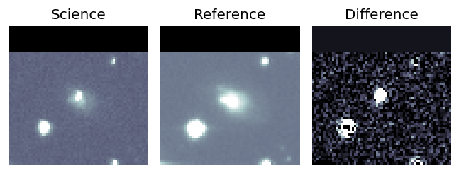
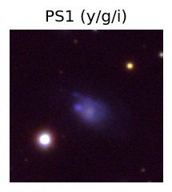

TESS: Sectors [ 14 15 16 17 18 21 24 41 48 51 54 55 56 57 58 74 75 76
77 78 82 83 84 85 120 121]
NED photo-z only: WISEA J200434.41+623836.6 (G, 2.1″) z=0.0239 [zflag PUN] — not used for peak abs mag
PS1: 1 source in 3 arcsec Closest: d = 3.02 arcsec photoz=0.03+/-0.01 peak abs mag = -19.63
LegacySurvey: 0 sources in 3 arcsec
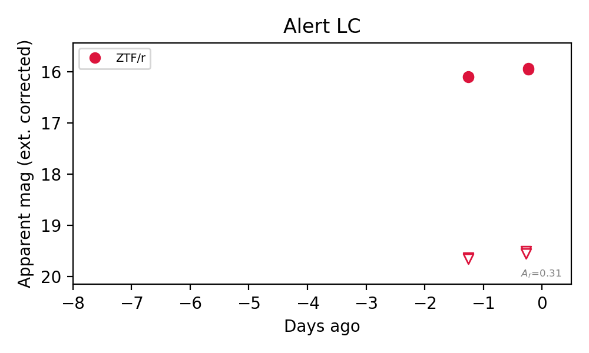
Rise Rate:
r: 96.81 mag/day
Fade Rate:
r: 3.5 mag/day
5. [ZTF] ZTF26abqvuku (FBOT?) [Back to Top] [Share] [Trigger Swift] [Fritz Alert] [Fritz Source] [Lasair]RA, Dec: 286.7431, 0.98838 19h 6m58.35s, 0d59m18.18sGalactic (l, b): 35.58538, -3.00393 ext(g-r) = 1.634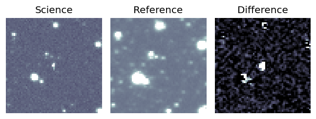
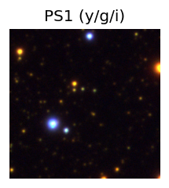
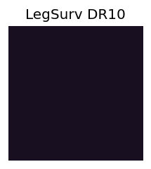
TESS: Sectors [54 80]
PS1: 1 source in 3 arcsec Closest: d = 2.05 arcsec photoz=0.33+/-0.74 peak abs mag = -27.78
LegacySurvey: 0 sources in 3 arcsec
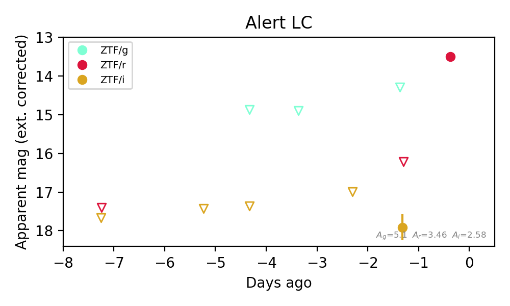
Extinction-corrected gi color:
From alerts: -3.62 +/- 99 mag
Extinction-corrected ri color:
From alerts: -1.7 +/- 99 mag
Rise Rate:
r: 2.95 mag/day
Fade Rate:
6. [ZTF] ZTF26abqwjtx (Afterglow?) [Back to Top] [Share] [Trigger Swift] [Fritz Alert] [Fritz Source] [Lasair]RA, Dec: 299.55649, 45.02063 19h58m13.56s, 45d 1m14.27sGalactic (l, b): 79.77799, 8.15208 ext(g-r) = 0.556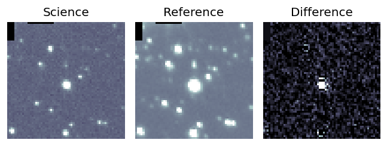
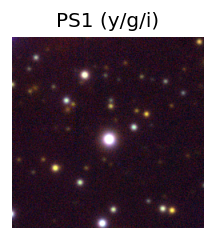

TESS: Sectors [ 14 15 41 54 55 74 75 81 82 120 121]
PS1: 0 sources in 3 arcsec
LegacySurvey: 0 sources in 3 arcsec
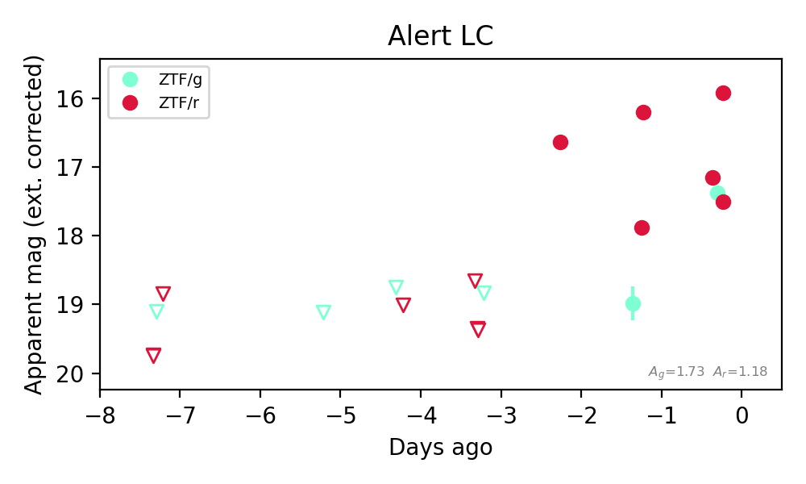
Extinction-corrected gr color:
From alerts: 0.34 +/- 0.08 mag
Consistent with synchrotron, g-r>0!
Rise Rate:
g: 1.52 mag/day
Fade Rate:
r: 0.17 mag/day